Problem 1. The behavior of a 1-input, 1-output device is measured by hooking a voltage source to its input and measuring the voltage at the output for several different input voltages:
-
if VIN <= VIL then VOUT >= VOH, and
if VIN >= VIH then VOUT <= VOL.
-
 Can one chose a VOL of 0V for this device? Explain.
No, since the static discipline requires that VOUT <= VOL for a valid "0" output and VOUT for this device never falls below 0.5V.
Can one chose a VOL of 0V for this device? Explain.
No, since the static discipline requires that VOUT <= VOL for a valid "0" output and VOUT for this device never falls below 0.5V.-
What's the smallest VOL one can choose and still have the device obey
the static discipline? Explain.
The smallest VOL one can choose is 0.5V, the lowest output voltage produced by the device.
-
Assuming that we want to have 0.5V noise margins for both "0" and "1"
values, what are appropriate voltage levels for VOL,
VIL, VIH, and VOH so that the device
obeys the static discipline. Hint: there are many possible choices,
just choose one that obeys the constraints listed above.
Here are the rules of operation imposed on us by the static discipline:
- VIN >= VIH implies VOUT <= VOL
- VIN <= VIL implies VOUT >= VOH
- VOL + noise margin = VIL
- VOH - noise margin = VIH
-
applying rule 3: VIL = 1V
applying rule 2 and looking at the VTC: VOH = 4V
applying rule 4: VIH = 3.5V-
Assuming that we want to have 0.5V noise margins for both "0" and "1"
values, what is the largest possible voltage level for VOL that still
results in a device that obeys the static discipline?
To determine our maximum VOL, let's set it equal to N. Then
-
VIL = N + 0.5V
-
VIH = VIL + M = N + 0.5 + M.
-
VOH = VIH + 0.5 = N + M + 1.
-
VOH = VTC(VIL) implies N + M + 1 = VTC(N + 0.5) = 6 - 2*(N + 0.5)
VOL = VTC(VIH) implies N = VTC(N + 0.5 + M) = 6 - 2*(N + M + 0.5)-
Assuming that we want to have equal noise margins for both "0" and "1"
values, what is the largest noise margin we can achieve with this
device and still obey the static discipline?
It's clear that to maximize our noise margins, VOL should be as small as possible and VOH should be as large as possible. By inspecting the VTC we see that VOL = 0.5V is the best we can do. From earlier parts we know we can achieve a noise margin N of at least 0.5V. We can use the following construction to figure out the largest noise margin N. Consider two of these devices hooked in series:
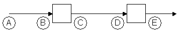 The letters "A" through "E" mark points of interest where we'll want to determine the voltage. Assume we apply 0.5V at point "A". Then:-
at point "B", the largest voltage we'll measure is 0.5 + N, i.e.,
the voltage we applied to the other end of the wire and the worst-case
noise perturbation.
referring to the VTC, with 0.5+N on the input we'll measure a voltage
of 4 - 2(N + .5 - 1) = 5 - 2N at the output (point "C").
at point "D", the smallest voltage we'll measure is 5 - 3N, i.e.,
the voltage we applied to the other end of the wire and the worst-case
noise perturbation.
finally at point "E" we'd want to measure 0.5V, i.e., a valid "0"
voltage level.
Problem 2. Inverter madness.-
The following graph plots the voltage transfer characteristic
for a device with one input and one output.
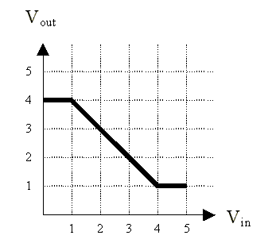 Can this device be used as a combinational device in a logic family with 0.75V noise margins?No. The device doesn't have any region in which its gain is greater than 1, so there are no choices for VIL, VOL, VIH, VOH which provide for non-zero noise margins.-
You are designing a new logic family and trying to decide on values
of the four parameters VIL, VOL, VIH,
VOH that lead to non-zero noise margins for various
possible inverter designs. Four proposed inverter designs exhibit the
voltage transfer characteristics shown in the diagrams below. For
each design, either (1) specify suitable values of VIL,
VOL, VIH, VOH. or (2) explain why no
values for these parameters satisfy the static discipline.
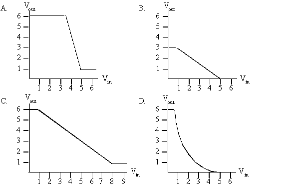 Device A: VOL = 1V, VIL = 3.5V, VIH = 5V, VOH = 6V Device B: no values exist, the gain is never greater than one Device C: no values exist, the gain is never greater than one Device D: VOL = .5V, VIL = 1V, VIH = 3.5V, VOH = 6V
Problem 3. Static discipline.-
Consider a combinational buffer with one input and one output.
Suppose we set its input to some voltage (VIN), wait for
the device to reach a steady state, then measure the voltage on its
output (VOUT) and find VOUT < VOL.
What can we say about VIN?
A combinational device guarantees that valid inputs lead to valid outputs if we wait longer than the propagation delay. But the opposite inference isn't true: a valid output doesn't imply a valid input -- for example, the buffer is allowed a valid "1" before the input has crossed VIH. So the only statement that we can make is that VIN < VIH since if VIN >= VIH the buffer is required to produce VOUT >= VOH.
-
Now consider an inverter. Suppose we set its inputs to some voltage
(VIN), wait for the device to reach a steady state, then
measure the voltage on its output (VOUT) and find
VOUT > VOH. What can we say about
VIN?
Using the same argument as above, the only statement we can make is that VIN < VIH.
Problem 4. Ternary Logic. Ternary is a term referring to the number system in base 3. Consider a convention in which a ternary digit is presented as an electric voltage between 0 and 10 V. Let 0-1 V represent a valid "0" output, 4-6 V a valid "1" output and 9-10 V a valid "2" output.-
Assuming noise margins 1 V wide, show the mapping of logic levels to
voltages for this ternary system. Include valid logic-level outputs,
noise margins and forbidden zones. Your chart should resemble the
following diagram, except of course it will incorporate 3 valid signal
levels:
 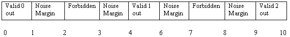
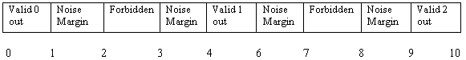-
Graph the transfer characteristic for a device capable of acting as a
ternary logic buffer, i.e., a device that produces at its output the
same logic level present at its input, as shown below:
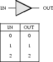 We need three stable regions, one for each valid output, and a high gain between valid levels to help restore poor inputs to an output valid level. 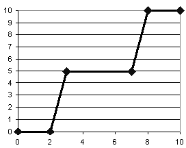-
Can a device with the following transfer characteristic be used as
a ternary logic buffer? Why or why not?
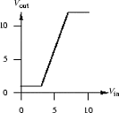 No, it can't be used as a ternary logic buffer. The device has only two stable regions.-
How many bits of information are carried in a ternary signal on a single wire?
log2(3) = 1.585 bits
-
How many different combinations of valid logic levels can be encoded
on three ternary wires? How many bits of information does this
represent? How many wires would be needed to carry this same amount
of information in binary?
27 different combinations can be encoded. This corresponds to log2(27) = 4.75 bits of information. Each binary wire carries one bit, so we would need 5 wires.
-
What is the information flow in bits/second for three ternary wires if
a new set of values is sent every 10 ms? What is the information flow
in bits/second for three binary wires if a new set of values is sent
every 10 ms?
Trinary: 4.75bits/packet * 1 packet/10ms = 475 bits/second
Binary: 3 bits/packet * 1 packet/10ms = 300 bits/second
Problem 5. Barracks logic is built out of sleeping soldiers covered by electric blankets. Each blanket has a control switch with discrete control settings ranging in 5-degree (Fahrenheit) intervals from 0 to 50 degrees. The temperature of a soldier covered by one or more electric blankets will be the sum of the ambient temperature in the barracks plus the setting on the controller for each blanket. Each soldier has a preferred sleeping temperature, which varies from individual to individual but is always within the range of 60 to 80 degrees, inclusive. If a soldier's temperature departs from her preferred temperature, the soldier will wake up once every minute and adjust the control by one 5-degree increment in the appropriate direction (if the solider is cold, the solider will increase the setting on the control, and vice versa). The soldier will continue these adjustments by 5-degree increments until she once again reaches her preferred temperature (and goes to sleep) or runs out of settings (in which case she grumbles angrily in bed). If soldiers are allowed to control their own blankets, each will soon reach their preferred temperature and slide into nocturnal bliss (assuming a suitable ambient temperature). The interesting aspects of barracks logic result from switching the controls of the various blankets to different soldiers. Inputs to the system are accomplished by placing a few controls in the hands of outsiders, and outputs are read from the control settings of certain soldiers designated by the logic designer.-
Draw the graph of output control setting vs. input control
setting for a typical soldier in steady state. Assume an ambient
temperature of 40 degrees. Suggest good choices of the
valid regions for the two logical values, the forbidden zone, and the
noise margins. Let logical 0 be when a control is completely off
and logical 1 be when the control is completely on (or at the highest
setting).
The soldiers have infinite gain since they continue to adjust their blanket as long as their temperature differs even slightly from their preferred temperature. (Actually given the control works only in 5-degree increments, it's unlikely than any solider will sleep unless the difference between the ambient temperature and her preferred temperature is exactly 5 degrees.) So the typical soldier's graph looks like:
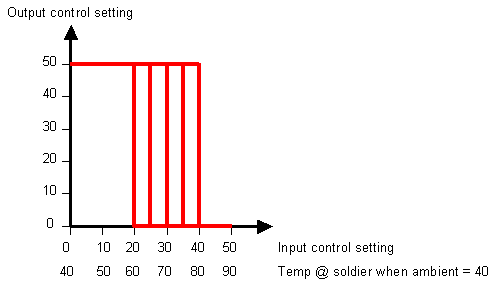 where the vertical part of the curve for a particular soldier would be located anywhere between 60 and 80 degrees. Examining the curve we see that it's possible to achieve a 20-degree noise margin for low values and a 10-degree noise margin at high values:-
TOL = 0 degrees
TIL = 20 degrees
TIH = 40 degrees
TOH = 50 degrees-
List some sources of noise that justify the need for noise margins.
Noise appears as a difference in temperature between the setting of the input control and what the solider actually feels. Sources of noise: changes in ambient temperature caused by drafts, changes in blanket operature due to line voltage variations, etc.
-
Even though it is the middle of February, a sudden warm spell raises
the ambient temperature in our barracks logic system to 55 degrees.
Sketch a new graph of output control setting vs. input control setting
in the warmer barracks.
Since the solider works the same, the whole graph shifts to the left since the input settings would be lower to achieve the same temperature at the soldier:
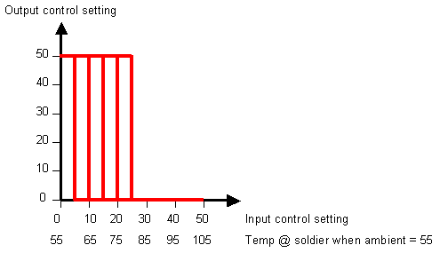 -
Over what range of ambient temperatures will barracks logic function
reliably?
"Reliable" in this example means that all soldiers can produce both outputs (i.e., output control set to 0 and 50). Let N be the desired noise margin in degrees. If the temperature rises above 60-N degrees, soldiers with a preferred temperature of 60 will always have their output control set to 0 regardless of the setting of their input control. Similarly if the temperature falls below 30+N degrees soldiers with a preferred temperature of 80 will always have their output control set to 50 regardless of the setting of their input control.
-
Does the following arrangement perform a useful function? What is it?
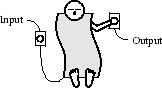 The soldier functions as an inverter.-
To create a system with multiple inputs, we allow several blankets to be
placed over a single soldier. What is the maximum fanin possible in
barracks logic if 170 degrees is the highest temperature a soldier
can tolerate without his characteristics being permanently altered?
If each soldier can tolerate 170 degrees then 170-ambient is the number of degrees that can be added to a soldier's environment by blankets. Each blanket can add up to 50 degrees, so (170-ambient)/50 is the limit on the number of blankets that can be piled on one soldier.
Problem 6. Bread and Circuits, Inc. has discovered an interesting electronic device (a Z-module) which is made using a single yeast cell, a speck of flour, and a grain of salt. The Z-module has two inputs carrying voltages VA and VB and a single output carrying VC. The output VC settles, after a 10ns period of stable input voltages, to the product of the input voltages restricted to range of 0V to 2V. In other words,
Assume that the Z-module treats negative input voltages as if they were 0. B&C is trying to make a logic family using Z-modules. As a starting point, they claim thatVC = VA * VB when 0 <= VA * VB <= 2 2 when VA * VB > 2 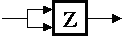 constitutes a valid combinational buffer under the proper voltage-to-logic representation conventions and will yield reasonable noise margins.-
Which, if any, of the following proposed voltage thresholds yields a
valid buffer with positive noise margins?
A. VOL = 1.5V VIL = 1.6V VIH = 1.7V VOH = 1.8V B. VOL = 0.7V VIL = 0.9V VIH = 1.1V VOH = 1.3V C. VOL = 0.1V VIL = 0.3V VIH = 1.7V VOH = 1.9V D. VOL = 0.5V VIL = 0.5V VIH = 1.5V VOH = 1.5V
Choice A would allow two "low" inputs (e.g., 1.6V) to generate a "high" output (1.6 * 1.6 = 2.56 which is above VOH) => not okay. Choice B would allow two "high" inputs (e.g., 1.1V) to generate an underdetermined output (1.1 * 1.1 = 1.21 which is above VOL but below VOH) => not okay. Choice C has positive noise margins and the allowed input voltages result in the desired behavior => okay Choice D doesn't have positive noise margins => not okay.-
Determine the voltage thresholds that maximize the noise margins of
B&C's buffer. If the noise margins are not independent, maximize the
smaller of the two.
To maximize the noise margins of the buffer, we consider the voltage transfer characteristic of the Z-module. Since VIN2 >= 2 will result in a VOH of 2, then we have VIH >= sqrt(2). Thus, VIH = sqrt(2), and VOH = 2. Since VOUT = VIN2 in the lower region of the voltage transfer characteristic, then let us represent VIN with "x" and VOUT with "x2". Then the lower noise margin is represented by the function f(x) = x - x2. To maximize the noise margin, we take the first derivative of f(x) and set it to zero: f'(x) = 1 - 2x = 0. Solving for x gives 0.5. Thus, VIL = x = 0.5V, and VOL = x2 = 0.25V.
-
Ivan Idea, chief logician at B&C, is exploring the use of a single
Z-module as a two-input logic gate, again with positive noise margins.
He suspects that a Z-module, under the appropriate logic conventions,
can be used for an AND or OR gate which obeys the static discipline.
Ivan's been at it for several weeks and needs your help.
Can you find a way to use a Z-module for an AND or OR combinational
device? If so, give the appropriate input and output voltage
thresholds and the function performed. If not, carefully explain why
the Z-module can't be used as AND or OR.
No, the Z-module can't be used as either an AND gate or an OR gate. In order to implement an OR gate, we must have the behavior that a logic "1" input and a logic "0" input produces a logic "1" output. In the case of a single Z-module, if we had 2V as the first input and 0V as the second input (noiseless, perfect input voltages) the output is 0V, instead of a logic "1" voltage. In order to implement an AND gate, we must have the behavior that a logic "1" input and a logic "0" input produces a logic "0" output. According to the static discipline, a "0" output means VOUT should be less than equal to VOL. If we substitute 2V for the logic "1" input and consider the "0" input, we have VOUT = VIL * 2 <= VOL. But we can't have VOL > VIL, so the Z-module can't function as an AND gate.
-
Ivan sidesteps the previous enigma by allowing himself the use of
several Z-modules as components of a single logic gate. He assumes
(and you may too) that noise enters the system only between logic
gates, not between the components of a single gate. He notes that
each of B&C's proposed buffers (using one Z-module) is an amplifier
with gain greater than one. Ivan reasons that by cascading many such
devices (as shown below), he can achieve arbitrarily high gain and
hence excellent noise margins.
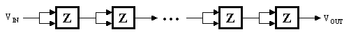 His plan is to use such a high-gain cascade on the output of a Z-module to restore the validity of marginal signal levels. Describe the voltage transfer characteristic (i.e, VIN vs. VOUT) of a cascade of a large number of Z-modules (via an expression or sketch).For N cascaded Z-modules, the voltage transfer characteristic is: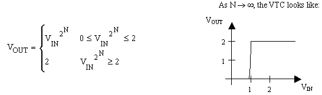 -
Is there any way by which many Z-modules can be used to build a
2-input AND gate whose noise margins are both greater than 0.75V? If
so, sketch an approach (giving a diagram and calculating the noise
margins). If not, give a brief but convincing explanation.
It is possible to build an AND gate whose noise margins greater than 0.75V. Our strategy is to clean up both input signals independently before computing the logic function. A cascade of 5 Z-modules is enough to restore marginal signals, and the last Z-module on the right performs the AND function. The diagram looks like this:
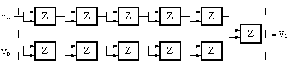
Problem 7. Combinational construction rules In lecture, we learned two basic principles regarding the class of combinational devices. The first allows us to build a combinational device from, e.g., electronic components:- A combinational device is a circuit element that has
- one or more digital inputs
- one or more digital outputs
- a functional specification that details the value of each output for every possible combination of valid input values
- a timing specification consisting (at minimum) of an upper bound tpd on the required time for the device to compute the specified output values from an arbitrary set of stable, valid input values.
- A set of interconnected elements is a combinational device if
- each circuit element is combinational
- every input is connected to exactly one output or to some vast supply of 0's and 1's
- the circuit contains no directed cycles
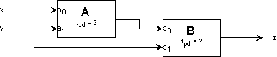 The propagation delay - the upper bound on the output settling time - for each device is specified in nanoseconds. The functional specifications for each component are given as truth tables detailing output values for each combination of inputs: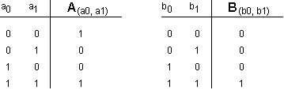 -
Give a truth table for the acyclic circuit, i.e. a table that
specifies the value of z for each of the possible combinations of
input values on x and y.
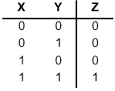
-
Describe a general procedure by which a truth table can be computed
for each output of an arbitrary acyclic circuit containing only
combinational components. [HINT: construct a functional specification to
each circuit node].
Since each circuit node is connected to an output of some combinational element, the functional specification for each circuit node is given by the functional specification for the combinational element which drives it. If we start with components that are only connected to inputs to the overall circuit, we can build truth tables for their outputs that only involve those inputs. We can then work on the next tier of components and build truth tables for their outputs that only involve overall circuit inputs. Continuing in this manner, we'll eventually reach components that drive the overall circuit outputs and be able to construct truth tables for each output that only involves overall circuit inputs. In our example, we'd first build a truth table for the output of the A module and then use that table to build a table for Z: 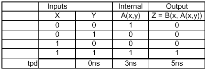
-
Specify a propagation delay (the upper bound required for each
combinational device) for the circuit.
The propagation delay for Z is 5ns.
-
Describe a general procedure by which a propagation delay can be
computed for an arbitrary acyclic circuit containing only
combinational components. [HINT: add a timing specification to each
circuit node].
- Label each INPUT to the circuit with tpd=0.
- Repeatedly
- Find a circuit element E whose input nodes are each labeled with a prop delay but whose output nodes are not.
- Label each output node of E with the delay M, where M is the prop delay of E plus the MAXIMUM of the times on the input nodes.
- When you can't find an unlabeled output node, stop.
- The prop delay spec for the device is the MAX of the prop delay labels on the output nodes.
-
Do your general procedures for computing functional specifications and
propagation delays work if the restriction to acyclic circuits is
relaxed? Explain.
No. Without cycles, you're guaranteed to be able to find a new output node to label (i.e., the output of some element E whose inputs are already labeled) until the entire circuit is labeled. If you have cycles, the algorithm breaks down. You can be left with a cycle of elements whose outputs are unlabeled and some of whose inputs are unlabeled.
Problem 8. If you are given the following 2-input and 2-output combinational block:
-
Does this device adhere to the static disipline?
Yes: there's an unambiguous functional specification for each output and a maximum propagation delay has been specified.
-
Suppose that the output X is connected to the input B, what
output would you expect?
If you assume that the circuit was composed of two inverters (one with A as its input, the other with B as its input) then we would expect Y = A after 2 second propagation delay. However, there are other implementations that have the same functional specification. In particular, X might be implemented with logic that uses both A and B as inputs. In this case, connecting X to B would create a cycle and the value of Y might be undetermined.
-
Suppose the functional description was changed to the
following: The ouput X is a 1 if both A and B are "0", and
Y is a 1 if either A or B but not both are "1".
Does this change the answer the previous question?
No. Since X and Y are functions of both A and B, it's more obvious that a cycle would be created when X was connected to B.
-
Suppose the functional description was changed to the
following: The ouput X is a 1 if both A and B are "0", and
Y is a 1 if either A or B but not both are "1".
Does this change the answer the previous question?
-
Suppose that the output X is connected to the input B, what
output would you expect?
-
Does this device adhere to the static disipline?
-
Describe a general procedure by which a propagation delay can be
computed for an arbitrary acyclic circuit containing only
combinational components. [HINT: add a timing specification to each
circuit node].
-
Specify a propagation delay (the upper bound required for each
combinational device) for the circuit.
-
Describe a general procedure by which a truth table can be computed
for each output of an arbitrary acyclic circuit containing only
combinational components. [HINT: construct a functional specification to
each circuit node].
- A combinational device is a circuit element that has
-
Is there any way by which many Z-modules can be used to build a
2-input AND gate whose noise margins are both greater than 0.75V? If
so, sketch an approach (giving a diagram and calculating the noise
margins). If not, give a brief but convincing explanation.
-
Ivan sidesteps the previous enigma by allowing himself the use of
several Z-modules as components of a single logic gate. He assumes
(and you may too) that noise enters the system only between logic
gates, not between the components of a single gate. He notes that
each of B&C's proposed buffers (using one Z-module) is an amplifier
with gain greater than one. Ivan reasons that by cascading many such
devices (as shown below), he can achieve arbitrarily high gain and
hence excellent noise margins.
-
Ivan Idea, chief logician at B&C, is exploring the use of a single
Z-module as a two-input logic gate, again with positive noise margins.
He suspects that a Z-module, under the appropriate logic conventions,
can be used for an AND or OR gate which obeys the static discipline.
Ivan's been at it for several weeks and needs your help.
Can you find a way to use a Z-module for an AND or OR combinational
device? If so, give the appropriate input and output voltage
thresholds and the function performed. If not, carefully explain why
the Z-module can't be used as AND or OR.
-
Determine the voltage thresholds that maximize the noise margins of
B&C's buffer. If the noise margins are not independent, maximize the
smaller of the two.
-
Which, if any, of the following proposed voltage thresholds yields a
valid buffer with positive noise margins?
-
To create a system with multiple inputs, we allow several blankets to be
placed over a single soldier. What is the maximum fanin possible in
barracks logic if 170 degrees is the highest temperature a soldier
can tolerate without his characteristics being permanently altered?
-
Does the following arrangement perform a useful function? What is it?
-
Over what range of ambient temperatures will barracks logic function
reliably?
-
Even though it is the middle of February, a sudden warm spell raises
the ambient temperature in our barracks logic system to 55 degrees.
Sketch a new graph of output control setting vs. input control setting
in the warmer barracks.
-
List some sources of noise that justify the need for noise margins.
-
Draw the graph of output control setting vs. input control
setting for a typical soldier in steady state. Assume an ambient
temperature of 40 degrees. Suggest good choices of the
valid regions for the two logical values, the forbidden zone, and the
noise margins. Let logical 0 be when a control is completely off
and logical 1 be when the control is completely on (or at the highest
setting).
-
What is the information flow in bits/second for three ternary wires if
a new set of values is sent every 10 ms? What is the information flow
in bits/second for three binary wires if a new set of values is sent
every 10 ms?
-
How many different combinations of valid logic levels can be encoded
on three ternary wires? How many bits of information does this
represent? How many wires would be needed to carry this same amount
of information in binary?
-
How many bits of information are carried in a ternary signal on a single wire?
-
Can a device with the following transfer characteristic be used as
a ternary logic buffer? Why or why not?
-
-
-
Now consider an inverter. Suppose we set its inputs to some voltage
(VIN), wait for the device to reach a steady state, then
measure the voltage on its output (VOUT) and find
VOUT > VOH. What can we say about
VIN?
-
-
You are designing a new logic family and trying to decide on values
of the four parameters VIL, VOL, VIH,
VOH that lead to non-zero noise margins for various
possible inverter designs. Four proposed inverter designs exhibit the
voltage transfer characteristics shown in the diagrams below. For
each design, either (1) specify suitable values of VIL,
VOL, VIH, VOH. or (2) explain why no
values for these parameters satisfy the static discipline.
-
-
Assuming that we want to have equal noise margins for both "0" and "1"
values, what is the largest noise margin we can achieve with this
device and still obey the static discipline?
-
-